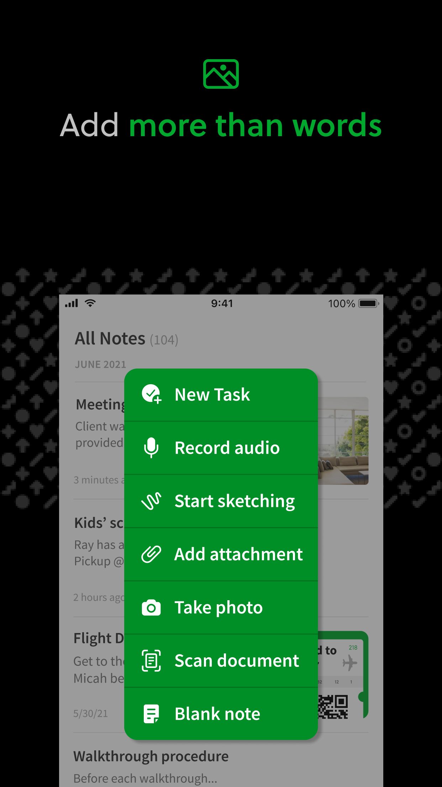
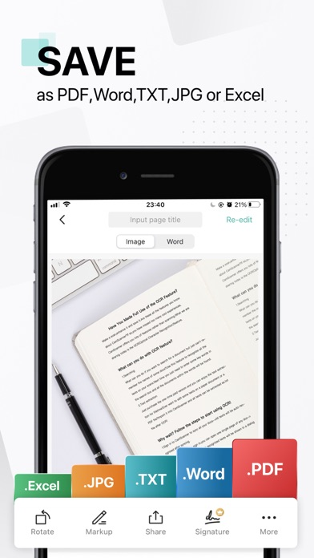
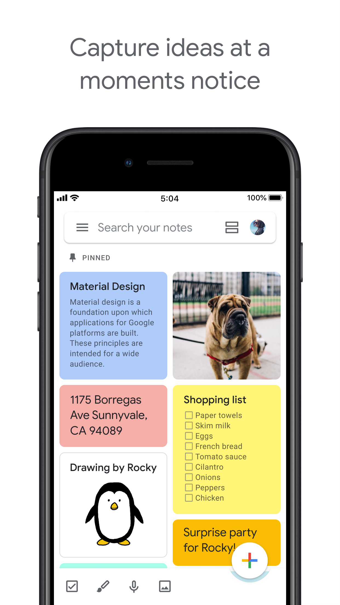

Evernote — 「+」展开成一叠绿色带字条：New Task / Take photo / Scan document。整叠同色=整体感。

CamScanner — 底部 Rotate/Markup/Share 每枚图标都带字；.Excel/.JPG/.PDF 用饱和色块区分格式。
Things 3 — 实心蓝圆「+」是唯一主按钮，点开出快录卡，Save 用同色实心。

Google Keep — 底排四枚小图标 + 右下彩色浮钮；笔记卡用饱和粉/黄/蓝块。